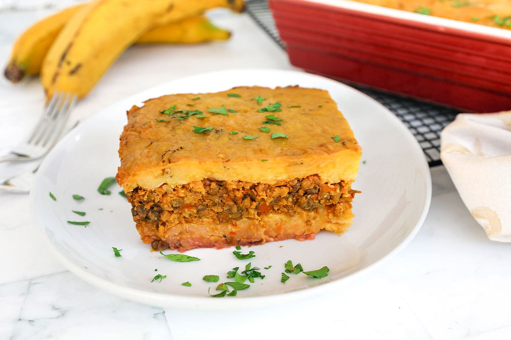

Home
Pastelon de Platano Maduro Recipe

Description
Pastelón de Plátano Maduro is a Dominican-style casserole made with layers of sweet mashed plantains, seasoned ground beef, and cheese, similar to lasagna. It's a beloved dish that balances sweet and savory flavors.
Ingredients
- cooking spray
- 10 plantains, peeled and broken into chunks
- ½ teaspoon salt
- ½ cup milk
- ¼ cup butter
Filling
- 1 tablespoon canola oil
- 1 pound ground beef
- 1 yellow onion, chopped
- 1 green bell pepper, chopped
- ½ cup tomato sauce
- 1 teaspoon crushed garlic
- ½ cube chicken bouillon
- ½ pound shredded Cheddar cheese
Steps
- Preheat oven to 400 degrees F (200 degrees C). Spray a baking dish with cooking spray.
- Place plantains and salt into a large pot and cover with water; bring to a boil. Reduce heat to medium-low and simmer until plantains turn a darker yellow; add 1 cup water to the pot, bring to a boil, and cook until tender, about 15 minutes. Drain.
- Mash plantains, milk, and butter together in the pot until smooth.
- Heat oil in a large skillet over medium heat. Cook and stir ground beef, onion, bell pepper, tomato sauce, garlic, and chicken bouillon, adding water if mixture gets too dry, in hot oil until beef is browned and cooked through, 10 to 12 minutes.
- Spread 1/2 of the mashed plantains into the bottom of the prepared baking dish. Pour meat mixture over the plantains and top with Cheddar cheese. Spread remaining mashed plantains over the cheese.
- Bake in the preheated oven until plantains are golden and filling is bubbling, about 10 minutes.